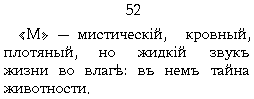
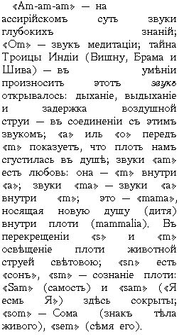
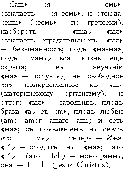
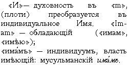
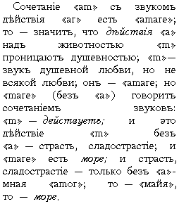
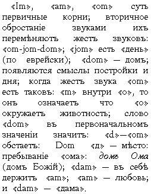
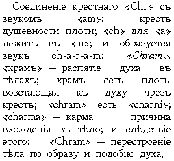
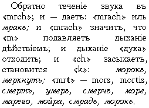

Glossolalia (Section 52)
GLOSSOLALIA

"M" is -- mystical, bloody, fleshy, but a liquidy sound of life in the moisture: in it is the mystery of animality.

"Am-am-am" -- in Assyrian are sounds of profound knowledges; "Om" is -- the sound of meditation; the mystery of the Indic Trinity (Vishnu, Brahma, and Siva) -- was revealed in the ability to pronounce this sound: breathing, exhaling, and holding the air stream -- in combination with this sound; "a" or "o" before "m" shows, that our flesh condensed in the soul; the sounds "am" are love: it [love] is -- "m" inside of "a"; the sounds "ma" are -- the sounds "a" inside of "m"; this is -- "mama", bearing the new soul (the child) inside of the flesh (mammalia). Where "s" and "m" intersect, there is the illumination of the animal flesh by the stream of light; "sn" is somnus -- somnulence [son], "sm" is -- consciousness of the flesh: "Sam" (selfness [samost']) and "sum" ("I am I") are here concealed; "som" -- Soma (sign of the living body), "sem" (its semen).

"Iam" -- "I am'" [ya yem]: signifies -- I am [ia iesm'] and hence "eimi" ("I am" -- in Greek); conversely "mia" -- "mia" signifies a state of suffering: "mia" is -- namelessness; beneath "mia-mia", beneath "mama" all life is concealed; in the sound "mia" is -- one half of me, not the free "me", but the one fastened to the "m" (the maternal organism); and thence "mia" is -- an embryo; the fruit of the marriage of "a" with "m," the fruit of love (amo, amor, amare, ami) and it is "me [mia]"; with its appearance in the light this "mya" is now -- a Russian Name [Imia]: "I"-- descends upon the "mya"; This "I" (this Ich) is a monogram; it is I. Ch. (Jesus Christus).

"I" is -- spirituality in "m," (flesh) it is retransformed into the individual Name [Imya]. "Im-am" is -- possessing in Russian (I have [imam-imeyu]); "imam" is -- an individual, having [imeyushchi] power: a Muslim imam.

The combination of "am" with the sound of activity "ar" is "amare"; that -- signifies, that the activities of "a" above the animality of "m" permeate it with soulness; "m" is -- the sound of spiritual love, but not of every love; it is -- "amare"; but "mare" (without the "a") speaks in a combination of sounds: "m" -- acts; and this activity of "m" without "a" is -- passion, voluptuousness; and "mare" is Russian sea [mor'e]; and passion, voluptuousness -- only without an "a"-sort of "amor"; that is "maia," that is -- mor'e.

"Im," "am," "om" are the original/primary roots; [in?] their secondary growth of sounds their gesture of the sounds is modified: "om-jom-dom"; "jom" is "day" (in Hebrew); "dom" is -- Russian home [dom]; the meanings of construction and of the day appear; when the gesture of the sound "om" is like this: the "m" inside of "o," this signifies that "o" encircles animality; the word "dom" in its initial signification signifies: "d" -- surrounds "om": Dom "d" is -- a place: the presence of "om": the home of Om [dom Oma] (the Deity's domicile); "dam" -- holds in itself "am"; "am" is -- love; and "dam" is -- "dame" [dama]

The combination of the crucified "Chr" with the sound "am" is: the cross of spiritual flesh; the "ch" for "a" lies in "m"; and forms the sound "ch-a-r-a-m": "Chram"; the Russian cathedral [khram] is -- the crucifixion of the spirit in the bodies; the cathedral is the flesh, rising to meet the spirit through the cross; "chram" is "charm"; "charma" -- karma: the reason for entry into the body; and the consequence of this is: "Chram" is -- the restructuring of the body in the image and likeness of the spirit.

The flow of the sound back to "mrch" is in reverse; and -- it gives: "mrach" or "murk" [mrak]; and "mrach" signifies, that "m" smothers breathing with action; and the breath "of the spirit" departs; and "ch" dries up, it becomes "k": murkiness [morok], to turn murky [merknut'], "mrt" -- mors, mortis, mortality [smert'], he was mortal [on umer], mistral [smerch], the moor [more] , mirage [marevo], moira, mustiness [smrad], murkiness [morok].